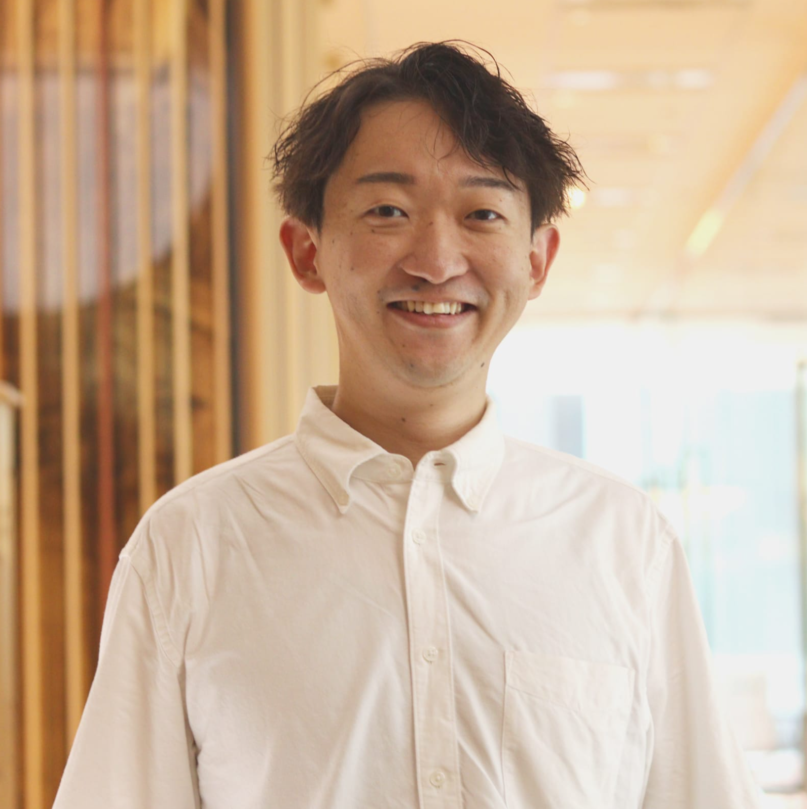

「素材を売るのではなく、
価値として設計し、
自ら届ける。」
代表取締役 片倉 好敬
Representative Director — KATAKURA Yoshitaka
アベントゥーライフ株式会社の代表取締役を務めるとともに、片倉興産株式会社の取締役としてホスピタリティ事業にも携わっております。また現在、新たに株式会社片倉兼太郎商会の立ち上げを進めております、片倉好敬と申します。
アベントゥーライフ株式会社では、電動モビリティや自転車を中心としたメンテナンス・運用事業を全国で展開しております。この事業を通じて得た最大の知見は、「プロダクト単体では価値は成立せず、運用や体験まで含めて設計する必要がある」という点です。
次に、片倉興産株式会社では、ホテルや迎賓館、庭園といった歴史資産を活用したホスピタリティ事業に携わっております。この領域においては、「意味や物語といった情緒的価値がブランドを形成する」という知見を得ました。
これら二つの事業を通じて、「価値を構造として設計すること」と、「体験や意味まで含めて届けること」の重要性を実務として蓄積してきました。そして現在、その知見をもとに新たに立ち上げているのが、株式会社片倉兼太郎商会です。
足すのではなく、満たす。
常にお客様の視点に立ち、真に求められる価値を追求します。
医療・科学的根拠に基づいた製品開発で、健やかな暮らしを支えます。
モノとしての価値を超え、記憶に残る体験価値を創造します。
デザインを経営の核に据え、一貫したブランド価値を構築します。
株式会社片倉兼太郎商会は、日本の伝統素材であるシルクを起点に、「価値設計」を中核とした新たな産業モデルを構築する企業です。本事業のビジョンは、「日本のシルクを再び世界へ」です。
日本はかつて、シルクを通じて世界とつながり、産業としても国の成長を支えてきました。しかし現代においては、国内需要のほとんどの供給を海外に頼ってしまっている現状です。この背景には、素材そのものではなく、「価値としての設計」がなされていないという構造的な課題があります。
当社は製造設備を持たず、原料設計・商品設計・ブランド設計に特化することで、軽資産でありながら高付加価値を実現する事業構造を採用しています。国内では医療機関と連携し医師監修の健康商品を通じて信頼を構築。海外ではMade in Japanの価値を維持したままグローバル展開を進めます。
株式会社片倉兼太郎商会は、「素材を売る企業」ではなく、「価値を設計し、届ける企業」です。シルクを起点に、日本の価値を再構築し、世界へ届ける。その実現に向けて、事業を推進してまいります。